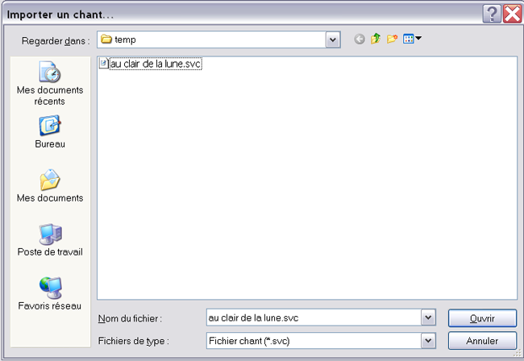
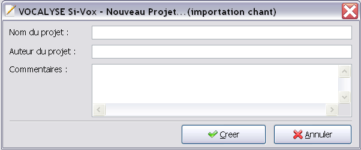

Pour importer un chant (.svc), il faut cliquer sur Fichier > Importer un chant...
Le logicel vous demande alors le fichier de chant que vous voulez importer (extension .svc)

En cliquant sur Ouvrir, le logiciel vous demandera les informations concernant le nouveau projet d'importation.

Si vous cliquez sur Annuler, rien ne s'effectuera. Si vous cliquez sur Créer, le logiciel créra un nouveau projet en important le chant sélectionné